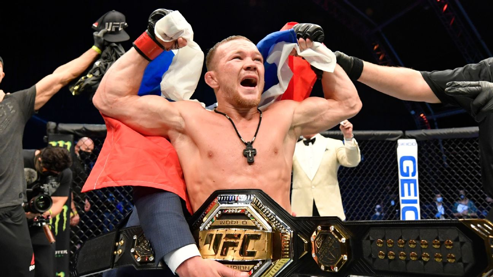

UFC
TODAS AS CATEGORIAS
Conheça todas as categorias e seus atuais Campeões!!!.
PESO MOSCA

CAMPEÃO: JOSHUA VAN
A categoria peso-mosca do UFC engloba atletas de até 56,7 kg (ou 125 libras). Conhecida pela extrema agilidade, velocidade e alto volume de golpes, a divisão foi introduzida em 2012 e hoje é destaque por abrigar grandes talentos mundiais, tendo Joshua Van como atual campeão da divisão.
PESO GALO

CAMPEÃO: PETR YAN
A categoria Peso-Galo do UFC é uma das divisões mais competitivas da organização, com limite de peso de até 61,2 kg (135 lbs) para lutas normais ou 61,6 kg em confrontos sem cinturão. É uma categoria masculina dinâmica, marcada pela velocidade e agilidade dos atletas, tendo Petr Yan como atual campeão da divisão.
PESO PENA

CAMPEÃO: ALEXANDER VOLKANOVSKI
A categoria peso-pena do UFC é a divisão até 65,7 kg (145 libras). Conhecida por abrigar alguns dos lutadores mais rápidos e dinâmicos do esporte, a divisão tem o brasileiro José Aldo como seu primeiro e maior campeão histórico, tendo Alexander Volkanovski como atual campeão da divisão.
PESO LEVE

CAMPEÃO: ILIA TOPURIA
A categoria peso-leve é uma das mais competitivas e prestigiadas do UFC, com limite de 70,3 kg (155 lbs). Conhecida pelo alto nível técnico e intensidade, já foi dominada por lendas como BJ Penn, Conor McGregor e Khabib Nurmagomedov, tendo Ilia Topuria como atual campeão da divisão.
PESO MEIO-MÉDIO

CAMPEÃO: ISLAM MAKHACHEV
A categoria peso meio-médio do UFC abrange atletas com até 77,1 kg (ou 170 libras). Esta divisão é uma das mais disputadas e históricas do esporte, abrigando tanto a classe principal de peso quanto os critérios de pesagem padrão do Ultimate Fighting Championship, tendo Islam Makhachev como atual campeão da divisão.
PESO MÉDIO

CAMPEÃO: SEAN STRICKLAND
A categoria dos pesos-médios do UFC engloba atletas com até 83,9 Kg (185 libras). O atual campeão linear é Sean Strickland, que conquistou o cinturão após derrotar Khamzat Chimaev no evento principal do UFC 328.
PESO MEIO-PESADO

CAMPEÃO: CARLOS ULBERG
A categoria peso meio-pesado do UFC engloba lutadores que pesam até 92,9 kg (205 lbs). Historicamente marcada pelo domínio de lendas como Jon Jones, é atualmente considerada uma das divisões mais competitivas e focadas na trocação da organização, tendo Carlos Ulberg como atual campeão da divisão.
PESO PESADO

CAMPEÃO: TOM ASPINAL
A categoria dos pesos-pesados do UFC agrupa os maiores atletas da organização, com limites que variam de 93 kg até 120,2 kg (206 a 265 libras). É a divisão mais pesada do esporte, onde a força bruta e o poder de nocaute são fatores decisivos, tendo Tom Aspinall como atual campeão da divisão.
PESO PALHA-FEMININO

CAMPEÃ: MACKENZIE DERN
A categoria peso-palha feminino do UFC abrange atletas com limite de peso de até (52,2) kg (115 libras). Introduzida em 2014, a divisão se destaca por ser uma das mais competitivas do MMA. Atualmente, o cinturão está sob o domínio da brasileira Mackenzie Dern.
PESO MOSCA-FEMININO

CAMPEÃ: VALENTINA SHEVCHENKO
A categoria peso-mosca feminino do UFC possui um limite de até 56,7 kg (125 lbs). A divisão é atualmente liderada pela campeã dominante Valentina "Bullet" Shevchenko, com a brasileira Natália Silva ocupando a 1ª colocação do ranking oficial da organização, tendo VAlentina Shevchenko como atual campeão da divisão.
PESO GALO-FEMININO

CAMPEÃ: KAYLA HARRISON
A categoria peso-galo feminino do UFC possui um limite de 61,2 kg (135 lbs). A divisão foi introduzida na organização em 2012, após a absorção do Strikeforce, e ficou historicamente marcada pelo reinado de Ronda Rousey, tendo Kayla Harrison como atual campeão da divisão.